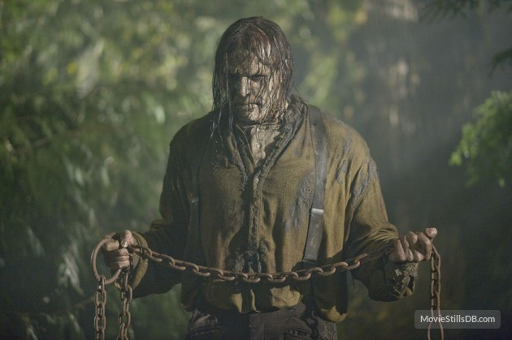
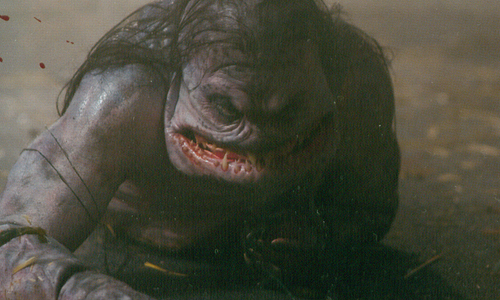

Our Selection
Popular Choice
The Buckner Family
A family of pain worshipping, backwoods rednecks. They are a rotten, putrid, undead human beings having some level of cognition beyond that of a normal zombie (as proven by their ability to wield weaponry and kill victims in coordinated attacks). Also, they are clearly shown to have a delight for torturing their victims before killing them.
Staff Choice (Hadley's Choice)
Merman
A half-human, half-fish monster with flabby blue skin, a large mouth full of sharp teeth, long unkempt black hair, and a blowhole on its back. It kills by attacking the victim with its teeth and blowing their blood out of its blowhole.
Summoning Item: Conch
Other Choices
Fornicus, Lord of Bondage and Pain
A humanoid figure with white, pale skin and pitch black eyes wearing black leather clothing, similar to a bondage outfit and has circular saw blades embedded in his head. He possess telekinetic powers and has the ability to summon lengths of chain to ensnare and rend his victims into pieces.
Summoning Item: Puzzle Sphere
Clown
He has no unusual physical features, and bears the stereotypical appearance of a clown: poofy red hair, red nose, colorful makeup, and baggy, multi-colored clothes with frilly trim. He dispatches of victims by stabbing them with a long, curved knife while giggling and laughing hysterically.